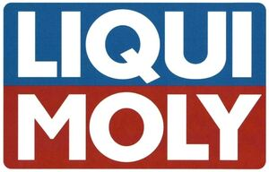

Trade Mark Journal No.2025/027 4 July 2025
WO0000001860112 (35,37,40)
Office of origin: Germany
Date of International Registration:7 March 2025
Date of designation in the UK:
7 March 2025

The mark contains the colours blue, red and white.
International priority date claimed: 18 November 2024
(Germany)
- Class 35
- Business management consulting for franchisees; business management consulting with respect to vehicle repair and vehicle care stations; business management consulting for vehicle repair and vehicle care stations, including advice on the planning, establishment and management of such stations; business management consulting for the management, control and supervision of vehicle repair and vehicle care stations; development of new sales and marketing strategies; advertising; advertising and marketing assistance as franchisor services; consulting and assistance services in the area of advertising, marketing and sales promotion for franchisees; consulting services in the field of internet marketing; business assistance as franchisor services; franchisee management consulting; business management assistance for franchisee operations; franchisee management assistance for franchisee company formation and product merchandising assistance under a franchise agreement; retail and wholesale services related to automotive oils, automotive additives, automotive care and repair products.
- Class 37
- Repair of machines; installation services relating to the repair of motor vehicles as well as their care and preparation, cleaning and care and preparation, cleaning and care of motor vehicles of all kinds, in particular vehicle preservation by sealing and polishing vehicles; motor vehicle lacquer repair and lacquer care; repair of all types of motor vehicles; cleaning services relating to all types of car washes; cleaning services relating to all types of car washes in gas/petrol stations; vehicle greasing; vehicle maintenance; vehicle service stations [refuelling and maintenance]; varnishing; vehicle breakdown repair services; rustproofing; anti-rust treatment for vehicles; retreading of tyres; rebuilding engines that have been worn or partially destroyed; greasing, lubricating, adjusting motors; installation and repair of vehicle glass; provision of information on the repair, care and installation of vehicle glass; provision of information on the repair or maintenance of motor vehicles; advice on the repair of vehicles; renting and leasing, also by way of franchising car washes; car wash services; cleaning services, namely automatic and manual soaping; washing, drying, polishing and preservation treating of passenger cars as well as interior and exterior cleaning services; carrying out engine washes; consultancy services relating to maintenance and repair of motor vehicle.
- Class 40
- Treatment of materials, namely, stripping, abrading, air freshening [air conditioning], air purification, air improvement [deodorizing], burnishing by abrasion, sandblasting services, grinding, chromium plating, gilding, nickel plating, silver plating and tin plating; information and consultancy services on material treatment; stripping finishes; abrasion; air freshening [air conditioning]; air purification; air improvement [air deodorizing]; burnishing by abrasion; sandblasting services; grinding; chromium plating; gilding; nickel plating; silver plating; tin plating; information, advice and consulting on recycling and disposal of automotive chemical products, waste oil and lubricants.
Liqui-Moly Gesellschaft mit beschränkter Haftung
Representative: Weickmann & Weickmann Patent- und Rechtsanwälte PartmbB, Richard-Strauss-Straße 80, 81679 München, GERMANY